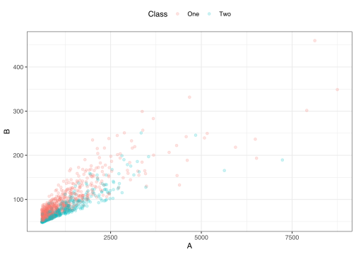
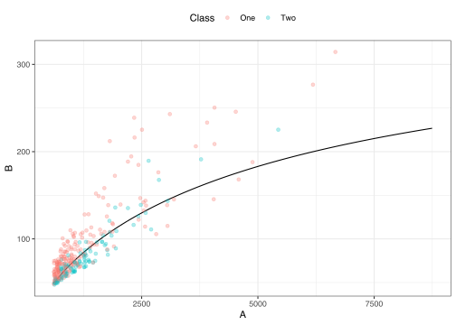

This article requires that you have the following packages installed: keras and tidymodels.
This article focuses on fitting models using the parsnip package. For a classification problem, a single model is fit and evaluated using a validation set. While the tune package has functionality to also do this, the parsnip package is the center of attention so that we can better understand its usage.
A small, two predictor classification data set is used to fit the model. The data are in the workflows package and have been split into a training, validation, and test data sets. In this analysis, the test set is left untouched; the code here is trying to emulate a good data usage methodology where the test set would only be evaluated once a variety of models were considered.
data(bivariate)
nrow(bivariate_train)
#> [1] 1009
nrow(bivariate_val)
#> [1] 300A plot of the data shows two right-skewed predictors:
ggplot(bivariate_train, aes(x = A, y = B, col = Class)) +
geom_point(alpha = .2)
A single hidden layer neural network will be used to predict the outcome. To do so, the columns of the predictor are transformed to be more symmetric (via the step_BoxCox() function) and on a common scale (using step_normalize()). recipes will be used to do so:
biv_rec <-
recipe(Class ~ ., data = bivariate_train) %>%
# There are some missing values to be imputed:
step_BoxCox(all_predictors())%>%
step_normalize(all_predictors()) %>%
# Estimate the means and standard deviations for the columns as well as
# the two transformation parameters:
prep(training = bivariate_train, retain = TRUE)
# juice() will be used to get the processed training set back
val_normalized <- bake(biv_rec, new_data = bivariate_val, all_predictors())
# For when we arrive at a final model:
test_normalized <- bake(biv_rec, new_data = bivariate_test, all_predictors())The keras package will be used to fit a model with 5 hidden units and uses a 10% dropout rate to regularize the model:
set.seed(57974)
nnet_fit <-
mlp(epochs = 100, hidden_units = 5, dropout = 0.1) %>%
set_mode("classification") %>%
# Also set engine-specific argument to prevent logging the results:
set_engine("keras", verbose = 0) %>%
fit(Class ~ ., data = juice(biv_rec))
nnet_fit
#> parsnip model object
#>
#> Fit time: 9.2s
#> Model
#> Model: "sequential"
#> ________________________________________________________________________________
#> Layer (type) Output Shape Param #
#> ================================================================================
#> dense (Dense) (None, 5) 15
#> ________________________________________________________________________________
#> dense_1 (Dense) (None, 5) 30
#> ________________________________________________________________________________
#> dropout (Dropout) (None, 5) 0
#> ________________________________________________________________________________
#> dense_2 (Dense) (None, 2) 12
#> ================================================================================
#> Total params: 57
#> Trainable params: 57
#> Non-trainable params: 0
#> ________________________________________________________________________________In parsnip, the predict() function can be used to characterize performance on the validation set. Since parsnip always produces tibble outputs, these can just be column bound to the original data:
val_results <-
bivariate_val %>%
bind_cols(
predict(nnet_fit, new_data = val_normalized),
predict(nnet_fit, new_data = val_normalized, type = "prob")
)
val_results %>% slice(1:5)
#> # A tibble: 5 x 6
#> A B Class .pred_class .pred_One .pred_Two
#> <dbl> <dbl> <fct> <fct> <dbl> <dbl>
#> 1 1061. 74.5 One Two 0.467 0.533
#> 2 1241. 83.4 One Two 0.481 0.519
#> 3 939. 71.9 One One 0.628 0.372
#> 4 813. 77.1 One One 0.923 0.0767
#> 5 1706. 92.8 Two Two 0.356 0.644
val_results %>% roc_auc(truth = Class, .pred_One)
#> # A tibble: 1 x 3
#> .metric .estimator .estimate
#> <chr> <chr> <dbl>
#> 1 roc_auc binary 0.814
val_results %>% accuracy(truth = Class, .pred_class)
#> # A tibble: 1 x 3
#> .metric .estimator .estimate
#> <chr> <chr> <dbl>
#> 1 accuracy binary 0.737
val_results %>% conf_mat(truth = Class, .pred_class)
#> Truth
#> Prediction One Two
#> One 150 27
#> Two 52 71Let’s also create a grid to get a visual sense of the class boundary for the validation set.
x_grid <-
expand.grid(A = seq(min(bivariate_train$A), max(bivariate_train$A), length.out = 100),
B = seq(min(bivariate_train$B), max(bivariate_train$B), length.out = 100))
x_grid_trans <- bake(biv_rec, x_grid)
# Make predictions using the transformed predictors but
# attach them to the predictors in the original units:
x_grid <-
x_grid %>%
bind_cols(predict(nnet_fit, x_grid_trans, type = "prob"))
ggplot(x_grid, aes(x = A, y = B)) +
geom_contour(aes(z = .pred_One), breaks = .5, col = "black") +
geom_point(data = bivariate_val, aes(col = Class), alpha = 0.3)
#> ─ Session info ───────────────────────────────────────────────────────────────
#> setting value
#> version R version 3.6.1 (2019-07-05)
#> os macOS Catalina 10.15.3
#> system x86_64, darwin15.6.0
#> ui X11
#> language (EN)
#> collate en_US.UTF-8
#> ctype en_US.UTF-8
#> tz America/Los_Angeles
#> date 2020-03-23
#>
#> ─ Packages ───────────────────────────────────────────────────────────────────
#> package * version date lib source
#> broom * 0.5.5 2020-02-29 [1] CRAN (R 3.6.0)
#> dials * 0.0.4 2019-12-02 [1] CRAN (R 3.6.0)
#> dplyr * 0.8.5 2020-03-07 [1] CRAN (R 3.6.0)
#> ggplot2 * 3.3.0.9000 2020-02-21 [1] Github (tidyverse/ggplot2@b434351)
#> keras 2.2.5.0 2019-10-08 [1] CRAN (R 3.6.0)
#> parsnip * 0.0.5 2020-01-07 [1] CRAN (R 3.6.0)
#> purrr * 0.3.3 2019-10-18 [1] CRAN (R 3.6.0)
#> recipes * 0.1.9 2020-01-14 [1] Github (tidymodels/recipes@5e7c702)
#> rlang 0.4.5 2020-03-01 [1] CRAN (R 3.6.0)
#> rsample * 0.0.5.9000 2020-03-20 [1] Github (tidymodels/rsample@4fdbd6c)
#> tibble * 2.1.3 2019-06-06 [1] CRAN (R 3.6.0)
#> tidymodels * 0.1.0 2020-02-16 [1] CRAN (R 3.6.0)
#> tune * 0.0.1.9000 2020-03-17 [1] Github (tidymodels/tune@93f7b2e)
#> workflows * 0.1.0.9000 2020-01-14 [1] Github (tidymodels/workflows@c89bc0c)
#> yardstick * 0.0.5 2020-01-23 [1] CRAN (R 3.6.0)
#>
#> [1] /Library/Frameworks/R.framework/Versions/3.6/Resources/library